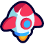

Animation Mode
Blocky Roblox animation rig
Studio Link
Reading connection...
Local channel → Roblox Studio
Open a supported AI chat to begin.
Blender Link Beta
Optional connection
Local creative workspace
Roblox Studio continues working when Blender is offline.
Creative Modes Beta
Switch either mode at any time.
AI Generated UI
Separate transparent UI components
Image-capable AIs create each panel, button, header, badge, or icon as its own transparent PNG. When off or unavailable, the AI decides whether a suitable matching preset icon helps.
AI Generated UI is on.
Animation rig
Blocky Roblox character
Blender
Importing replaces everything in the current Blender project, opens the Animation workspace, and places the rig at world origin.
Save your .blend file before importing.

Active Mode Beta Keep the current task moving in another tabViewCoder keeps only the task-owning AI tab responsive, never steals focus, and always respects Stop.
Choose another AI